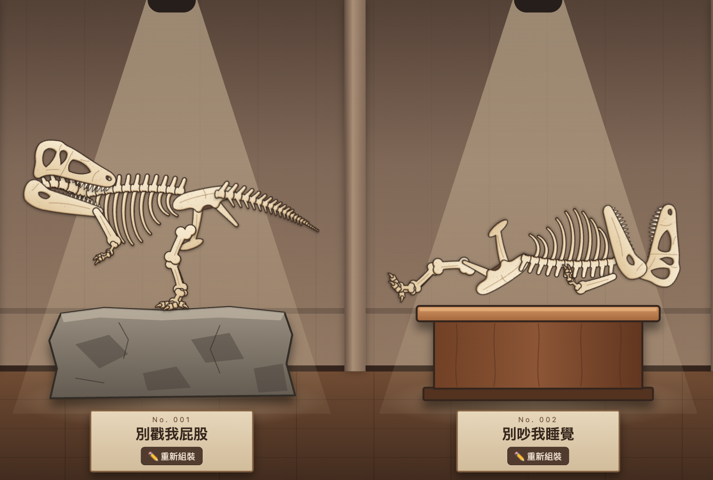

☰
恐龍博物館
🦴 恐龍博物館
📊 我的成績單
🎭 更換角色
🔑 修改密碼
＋ 新展台
🚪 登出
⛏️ 採集新化石
（數學）
🏛️ 參觀
其他博物館
玩法
🏛️ 參觀
其他博物館
回到我的博物館
⛏️ 採集新化石
（數學）
全部收回
拆除展台
取消
儲存
恐龍博物館
DINOSAUR MUSEUM
請輸入你的玩家代號
下一步
玩家代號：
選擇你的角色
不是我，重新輸入
⟳
⤡
展品名稱
↺
↻
⇋ 鏡像
＋
－
置頂
置底
收回
✕
🖊️ 原子筆
🧽 橡皮擦
🗑️ 清除
收起計算紙
最近的練習
關閉
🎁 歡迎禮物
送你
塊恐龍化石！打開化石庫看看，拼出你的第一隻恐龍吧。
太棒了！
🎭 更換角色
完成
🔑 修改密碼
原本的密碼
新密碼（4 個數字）
再輸入一次新密碼
取消
儲存新密碼
🏛️ 參觀其他博物館
可以參觀，但不能改動別人的展品喔！
關閉
玩法
採集化石
按
⛏️ 採集新化石（數學）
，完成 10 題數學練習
答對 6 題以上，就能挖到一塊新的恐龍骨頭！會是 10 種恐龍裡隨機的一塊，集滿一整組就能拼出完整的恐龍
算不出來？按
📝 計算紙
用筆算算看。做完後可以回顧每一題，再打開計算紙檢查
點左上角的
☰
：看
我的成績單
、
更換角色
、
＋ 新展台
、
登出
逛博物館
拖曳大廳
、滑鼠滾輪或 ← / → 鍵：左右走動參觀
點展品下方的
✏️ 重新組裝
：進入編輯模式；大廳最後面的
＋ 新增展台
：多擺一隻恐龍
🏛️ 參觀其他博物館
：去看看其他玩家的作品
編輯模式

發揮創意！同樣的骨頭可以拼成站得挺挺的暴龍，也可以拼成躺著睡覺的恐龍，還能把不同恐龍的骨頭混在一起。
拖曳骨頭
：移動位置；拖曳
⟳
旋轉（Shift 每 15° 對齊）、拖曳
⤡
縮放
兩指
：在平板上同時移動、旋轉、縮放
鍵盤
：方向鍵移動、Q / E 旋轉、F 鏡像、Delete 收回
化石庫裡每塊骨頭整座博物館只能用一次，用過的會變淡；收回骨頭或拆除展台會還回化石庫
左邊可以換
展示台
；點下方的
展品名稱
幫恐龍取名字；按
儲存
放上展示台
博物館存在網路上，換一台電腦或平板，用同樣的玩家代號和密碼登入就能繼續玩。
知道了！